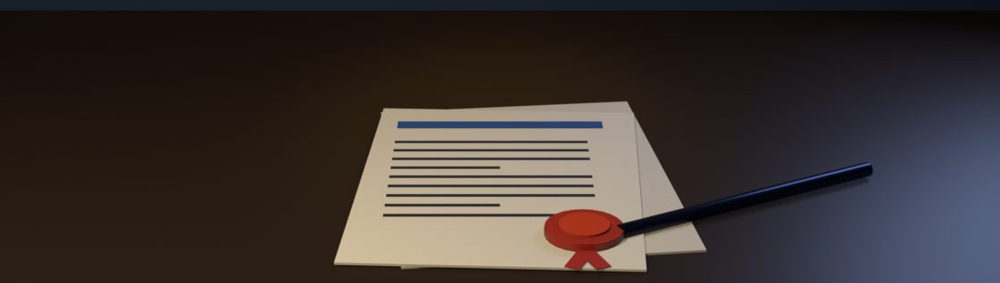
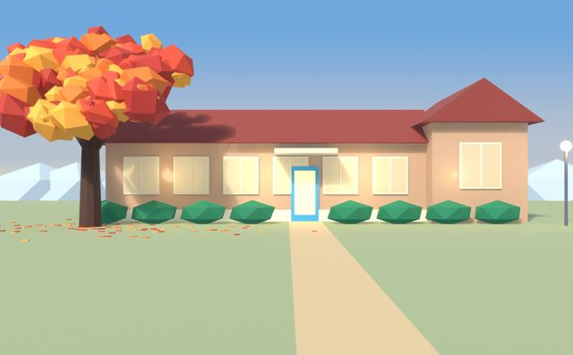
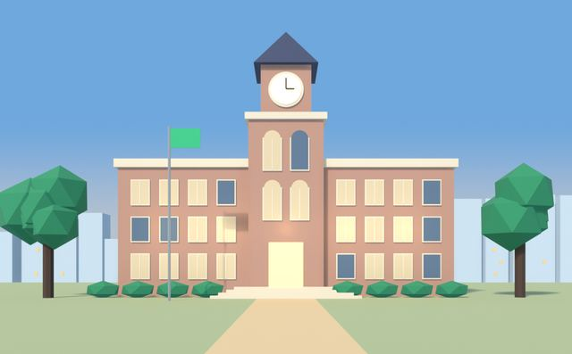
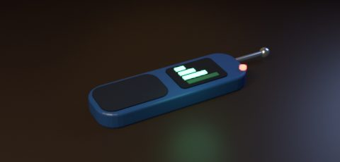
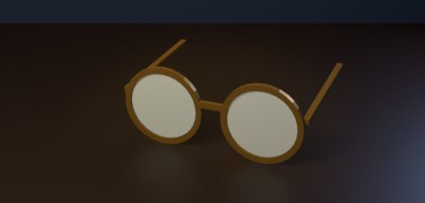
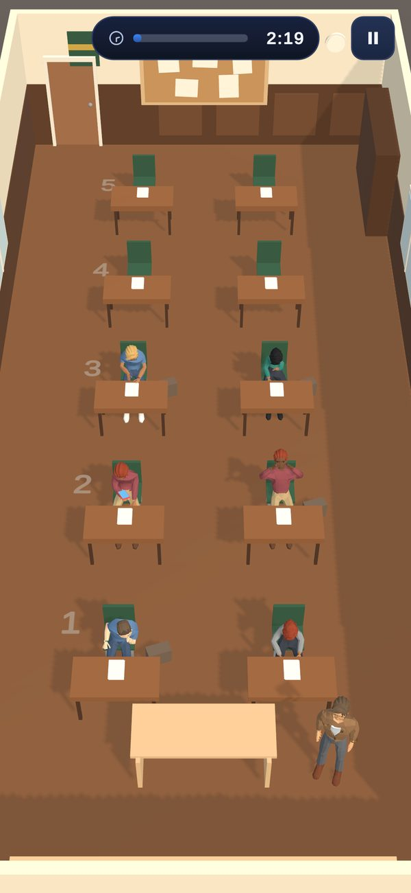
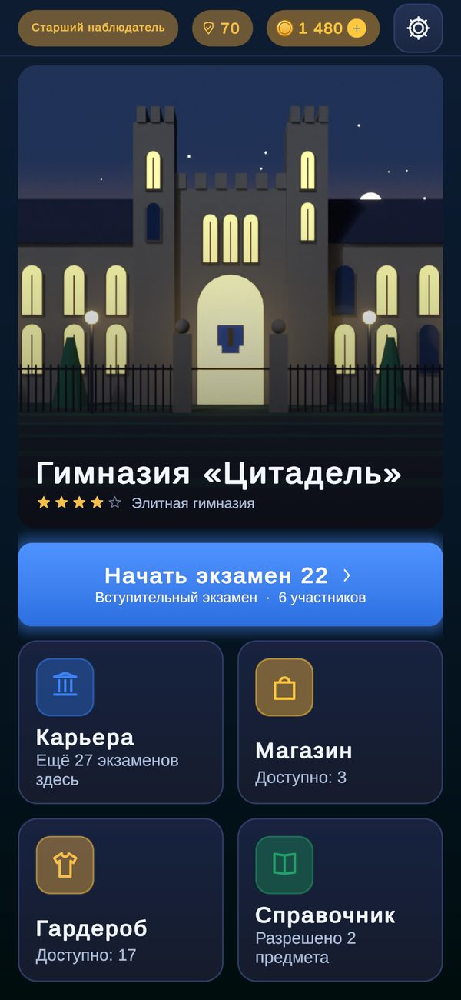
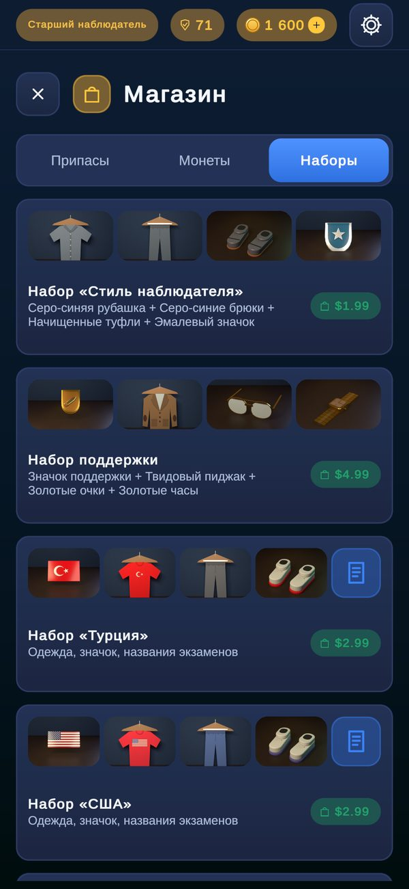
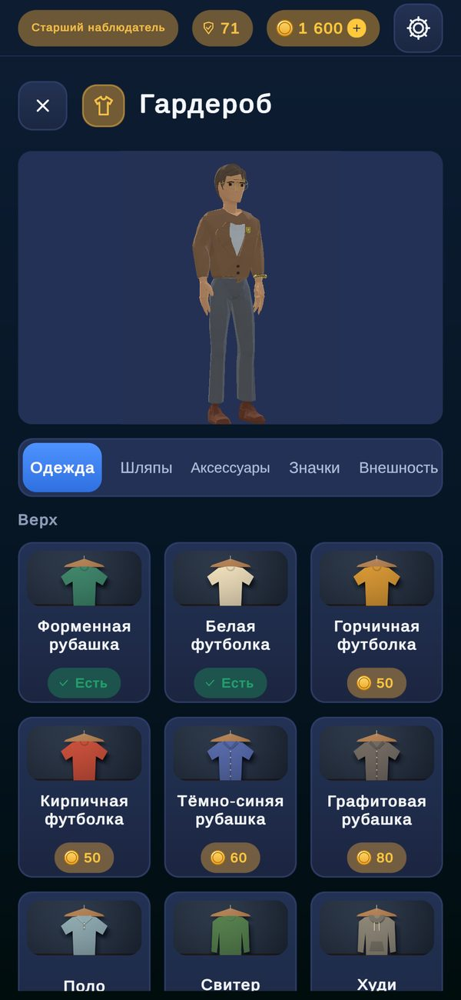
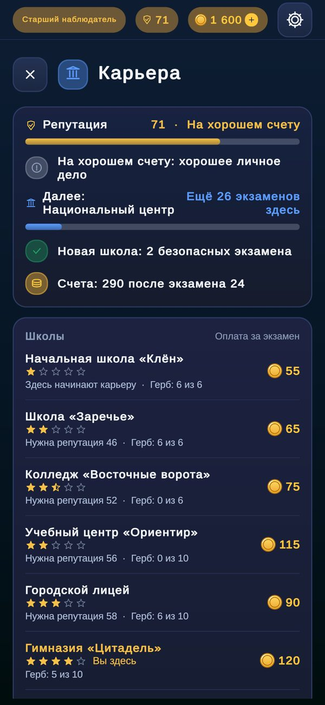

Следите за аудиторией
Взгляд в сторону, рука под партой, шёпот через два ряда. Вы видите то, что видит наблюдатель, и сами решаете, как поступить: предупредить, изъять, удалить или не вмешиваться.



Мобильная игра о наблюдателе на экзамене
Настоящие решения. Настоящие последствия.
Наблюдатель — это вы. Следите за аудиторией, присматривайтесь к тому, что лежит на партах, и решайте: предупредить, изъять, удалить или не вмешиваться. Странно — не значит виновен. Постройте карьеру в восьми учебных заведениях — от школы «Клён» до Национального центра тестов, зарабатывайте монеты и одевайте своего наблюдателя. Без рекламы, всю игру можно пройти бесплатно, и играть можно офлайн.

Как играть
Взгляд в сторону, рука под партой, шёпот через два ряда. Вы видите то, что видит наблюдатель, и сами решаете, как поступить: предупредить, изъять, удалить или не вмешиваться.



Упавший карандаш — ещё не шпаргалка. Прежде чем действовать, присмотритесь к тому, что лежит на партах и кто за ними сидит. Ошибочное решение обходится так же дорого, как упущенное нарушение, и репутация помнит и то и другое.

Начните в школе «Клён» и проложите путь до Национального центра тестов. В каждом заведении свои аудитории, своё давление и свои сюрпризы — от поломки машины в час пик до государственного экзамена.

Начальная школа

Средняя школа

Вечерний колледж для взрослых

Лицей

Частные подготовительные курсы

Элитная гимназия

Университет

Национальный экзаменационный орган


Детектор телефонов находит телефоны поблизости: это зацепка, а не доказательство. Запаситесь припасами перед экзаменом и решайте, когда их стоит пустить в ход.




Зарабатывайте монеты хорошей работой и тратьте их в Гардеробе: верх, брюки, обувь, шляпы, очки, значки и гербы всех заведений, где вы работали.

Без рекламы, без лутбоксов, без таймеров, которые просят заплатить. Всю игру можно пройти бесплатно; необязательные покупки — это монеты и внешний вид, и вы всегда знаете, что получите.
Скриншоты

Экзаменационная аудитория

Карьера

Магазин

Гардероб

Карьера
Вопросы
Нет. В игре нет рекламы, и она не использует рекламный идентификатор.
Да, игра бесплатная, и всю её можно пройти, ничего не платя. Необязательные покупки — это внешний вид и монеты. Ничего случайного: вы всегда знаете, что получите, ещё до оплаты.
Нет, играть можно офлайн. Если вы разрешите, игра отправляет анонимную игровую статистику и отчёты о сбоях; это можно в любой момент отключить в настройках. Подробнее — в Политике конфиденциальности.
English, Türkçe, Español, Français, 日本語, Português (Brasil) и Русский.
На телефонах Android, а также на iPhone и iPad. Обе версии скоро выйдут.
Напишите на support@pencilsdowngame.com или загляните на страницу поддержки.
Настоящие решения. Настоящие последствия.
Скоро на Android и iPhone/iPad.